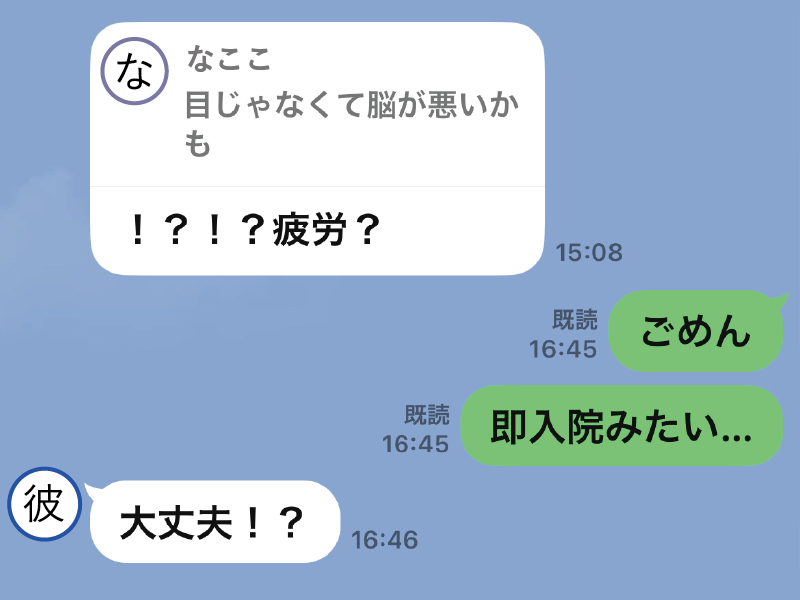

緊急入院

CTスキャンの結果はやはり、異常あり。子供の拳程度の影が頭の中にあり、本当に驚きました。お医者様は「今日から入院した方がいい。家族に連絡とって」とおっしゃって「今日の夜は魚の予定だったのに…」などと夕飯を悔やみながら家族・職場・同棲中の彼（現在の旦那）に連絡を取ったのでした。この時、インフルエンザ・コロナウイルスの検査を取り、陽性（のちに誤診だったと判明）が出て、物置に隔離されたり一人部屋を用意してもらったりなど、病室に着くまでに果てしなく長い時間がかかったことも苦しい思い出の一つです。
なんとか病室に着き点滴を打ってもらい、徐々に頭痛が和らいでいきました。視野は欠けたままでしたが「入院にはなったけど、頭もマシになったしすぐ退院できるハズ。視界もそのうち治って仕事にもすぐ行けるだろうな〜」と、まだ甘い考えの私でした。
もちろん2-3日では退院できず、コロナがあって面会も制限されていたので誰とも会えず、退屈でも苦しむことになります。また、シャワーを毎日浴びることが出来ず、年頃の私は嫌で嫌でたまりませんでした。